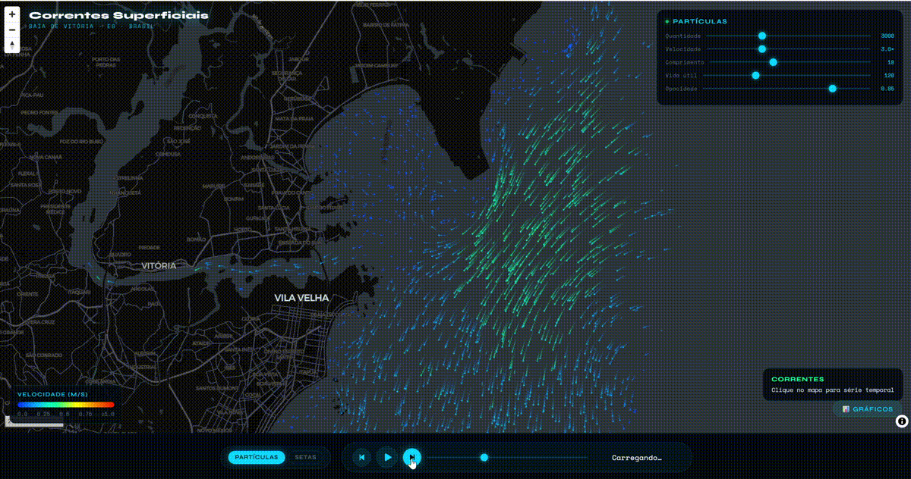

Hydrodynamic model output for Vitória Bay and the Espírito Santo coast
Interactive viewer · static data · runs in the browser
A web viewer for the results of a D-Flow FM (Delft3D Flexible Mesh) model of Vitória Bay and the adjacent coast. It animates the modelled currents as particles or arrows, overlays ECMWF wind, and plots speed, direction and water level at any point. The demo works on pre-computed results, so it needs no server and is always available.
Press play to animate the 72-hour window; click the map for a time series; click the marker for the virtual tide station. Open full screen for the best experience.
Currents in an estuary and on the adjacent shelf set how pollutants, sediments and floating objects are carried, and they change with the tide and the wind. This viewer lets a reader step through a modelled 72-hour period and see the flow field, the wind and the water level together, instead of reading static maps.
The model is an unstructured-mesh hydrodynamic model run with D-Flow FM (Delft3D FM Suite 2025.01). The mesh is refined inside the estuary and coarser offshore, so the same viewer follows narrow channels and open shelf flow.
Along the way the project also covers the data side of numerical modelling: reducing a 395 MB model output file to about 85 kB per time step, building a land/water mask, and turning raw mesh values into something a browser can animate smoothly.
D-Flow FM solves the shallow-water equations on an unstructured mesh. The run produced current velocity, water level and depth at every cell, saved every 20 minutes for 72 hours.
With h5py, NumPy and SciPy the mesh values are interpolated linearly onto a regular 300 × 300 grid, masked with a land/water mask rasterised from a coastline polygon, quantised to mm/s and compressed. One file per time step is about 85 kB.
MapLibre GL draws the base map. A canvas particle engine advects thousands of particles with the bilinearly sampled velocity field; Plotly draws the time series. Everything runs client-side.
Virtual tide station. The marker on the map is a virtual tide station. Its "observations" are synthetic: model water level plus correlated random noise, generated with a fixed seed. They demonstrate the observation-versus-model comparison panel and are not measurements. An earlier development version compared the model with a real tide-gauge record; that live connection was removed for the public demo.

D-Flow FM / Delft3D FM Suite 2025.01 · Python (h5py, NumPy, SciPy) · JavaScript, HTML canvas · MapLibre GL JS 4.7 · Plotly 2.35 · CARTO and OpenStreetMap base maps.
The viewer and the data-preparation script are in the GitHub repository (folder demo/). The code is released under the MIT licence; the model output files in demo/data/ are shared for demonstration only. To cite: Garção, H. (2026). Coastal Currents Demo — Vitória Bay. https://hgarcao.github.io/cv_web/portfolio.html
Run locally: clone the repository, then python -m http.server 8080 in the repository folder and open http://localhost:8080/demo/.
Questions about the demo, the data preparation or the model are welcome.
Send an email